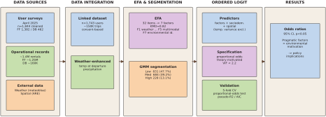

POTEBS / Methods
Methods and survey instrument
How the linked data set was built and analysed: data sources, survey, factor analysis, user segmentation and the ordered logit model. All details are in the appendix of the article in Transportation Research Part D.
- Survey responses
- 1,844 of 2,001 received
- Linked to trip histories
- 1,743 about 150,000 trips
- Operational records
- 1.4 million rentals, both systems
- Model fit
- 0.104 McFadden pseudo-R²
Analysis in three steps

-
Linking survey and trip data
Two parallel surveys went to about 32,000 registered users (about 25,000 of Pick-e-Bike and 7,000 of PubliBike Velospot). After quality checks, 1,844 responses remained. 1,743 respondents agreed to have their answers linked to their full rental history, about 150,000 trips. Usage intensity is therefore observed, not self-reported.
-
Factors and segments
An exploratory factor analysis reduced 32 attitude items to seven factors, such as weather tolerance, environmental self-identity and the combination with other modes. A Gaussian mixture model on rentals per month then identified three usage segments (low, medium, high) without fixed thresholds.
-
Ordered logit model
Because the segments are ordered, membership is modelled with a proportional-odds ordered logit and reported as odds ratios. Fit is assessed with McFadden's pseudo-R² (0.104), AIC and five-fold cross-validated accuracy and macro-F1.
A measure that did not hold up
The temperature variance across a user's rides was first read as tolerance of bad weather. A sensitivity analysis that accounts for exposure showed that it mainly reflects long, year-round membership. It is therefore reported descriptively in the appendix and not used as a predictor in the published model.
Robustness
A Brant test rejects proportional odds overall. The deviations come mainly from control variables; among the attitudinal factors only environmental self-identity deviates, with its negative association concentrated at the threshold to high intensity. A multinomial logit and an unconstrained cumulative model give the same ranking of predictors.
Survey instrument
Two structurally identical surveys, one per system, fielded in April 2025 in German, French and English with Qualtrics. The operators sent the invitations; respondents could choose a CHF 10 voucher for the operator or for Galaxus/Digitec. The structure is documented in Appendix A3 of the article.
1. Mobility context and use
Driving licence, public transport passes (GA, half-fare, U-Abo), vehicle ownership, main mode by trip purpose, frequency of shared mobility use, combination with public transport, replaced modes, weather, price sensitivity.
- “I use e-bike sharing for complete trips from A to B / with public transport / with walking / as a fallback.”
- “How likely would you use e-bike sharing in light rain / heavy rain / wind / darkness?”
2. Attitudes and policy
Items based on the Theory of Planned Behaviour on environmental responsibility, e-bike sharing as sustainable transport, enjoyment and social support, and policy preferences such as infrastructure, subsidies and integration into public transport apps.
- “I have a personal responsibility to reduce my environmental impact.”
- “The public sector should subsidise e-bike sharing at the same level as public transport.”
3. Barriers and purchase intentions
Perceived barriers such as varying availability, price and convenience compared with a private (e-)bike, feedback on the service area, and plans to buy a private e-bike.
- “E-bike sharing availability varies too much to depend on it.”
- “Did e-bike sharing inspire you to buy your own e-bike?”
4. Sociodemographics
Year of birth, gender, postal code, years in Basel, education, employment and home-office share, distance to the nearest public transport stop, household composition and income.
5. Consent and reward
Explicit consent to the anonymous linkage of answers with rental records, choice of voucher, optional consent to a follow-up interview.
6. Quality checks
Three filters before linkage: completion in under five minutes, identical answers across all items of a Likert block, and a low reCAPTCHA score. 1,844 of 2,001 responses were retained (92.2%).
Seven attitudinal factors
Principal axis factoring with promax rotation (κ = 4) on 32 Likert items. KMO = 0.820, Bartlett's test p < 0.001; factors retained by an eigenvalue criterion above 1.10 and a reliability analysis.
| Factor | Items | Cronbach's α |
|---|---|---|
| F1 Weather-independent usage propensity | 6 | 0.813 |
| F2 Public sector intervention attitudes | 5 | 0.532 |
| F3 Hedonic motivation and social support | 4 | 0.665 |
| F4 Perceived functional superiority over public transport | 5 | 0.728 |
| F5 Multimodal complementarity behaviour | 4 | 0.598 |
| F6 Service reliability and affordability concerns | 4 | 0.401 |
| F7 Environmental self-identity and system belief | 2 | 0.633 |
The seven factors explain 58.3% of the variance. An eighth factor was dropped because of unacceptable reliability (α = 0.171). F6 has low reliability, so results involving it should be read with caution. Standardized factor scores (mean 0, SD 1) were computed with the regression method. Items and loadings: Table A5 of the article.